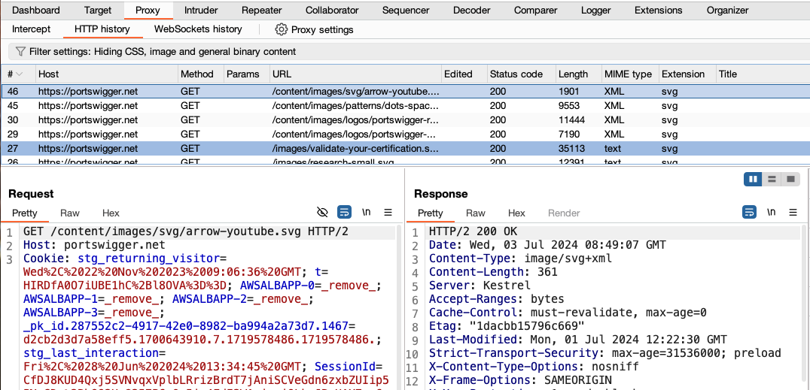
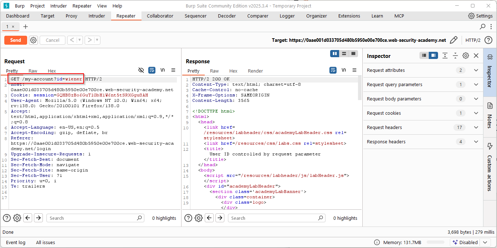

Install please:
%20, & (ampersand) to %26+ (plus sign)Note: httpie takes care of this by itself, you have to url-encode when using Burp
HTML forms upload their content as application/x-www-form-urlencoded by default
Data is sent as key–value pairs separated by & (ampersand):
key1=value1&key2=value2
Special characters are URL-encoded
+ (or %20)& -> %26= -> %3DNote: JSON is quite popular nowadays and does not url-encode the request (or response) body
Web application penetration testing toolkit
Lets you intercept, view, and modify HTTP requests and responses (among other functions)


Complete the missing ones from web introduction
A web application may have a dynamic page inclusion that allows reading files from the filesystem.
The user input that specifies the page to read should be validated to be in some allowed paths.
Otherwise, we may read arbitrary files in the server’s filesystem.
<?php $log = $_GET['log']; $base_dir = "/var/log/app/"; $file = $base_dir . $log; if (file_exists($file)) { echo "<pre>"; readfile($file); echo "</pre>"; } else { echo "Log not found"; } ?>
Remember absolute and relative paths (.. goes up in the directory hierarchy)
/var/log/app/ + ../../../../etc/passwd = /etc/passwd
/proc/self/cwd may also be useful
system() call or equivalentsystem(), Python’s os.system(), PHP’s system()
As we have seen before, we can make it so that a command receives stdin from another stdout with:
cmd1 | cmd2
Of course, this allows invoking multiple commands in a single composed command too.
Execute cmd2 after cmd1 finishes
cmd1; cmd2
Newline can be used for this too
cmd1 cmd2
Execute cmd2 only if cmd1 succeeds
cmd1 && cmd2
You can check exit status of the last executed command with echo $?. Zero
means success, non-zero means failure
Execute cmd2 only if cmd1 fails
cmd1 || cmd2
Start cmd1 and then start cmd2 (don’t wait for cmd1’s end)
cmd1 & cmd2
Can be used for a single command to background its execution (i.e., don’t wait for finish)
cmd1 &
We can also use command replacement syntax
cmd1 `cmd2` cmd1 $(cmd2)
cmd2 is evaluated first and its stdout is passed as an argument to cmd1
import os from flask import Flask, request app = Flask(__name__) @app.route("/ping") def ping(): host = request.args.get("host") os.system(f"ping -c 1 {host}") return "Done"
To test endpoints for command injection vulnerabilities we usually try payloads using the aforementioned methods
e.g.,
http -vf http://94.237.120.74:37598/ ip='127.0.0.1; ls -la'
http -vf http://94.237.120.74:37598/ ip=$'127.0.0.1\n{ls,-la}\n'
If we are lucky, the injection result will be available in the HTTP response
Otherwise, we have blind command injection and will have to get our results in other way
e.g., inject sleep 5 conditionally, curl result to a server we control
As our input may be filtered or mangled in many ways, we will need to check for ways around the filters
Check: